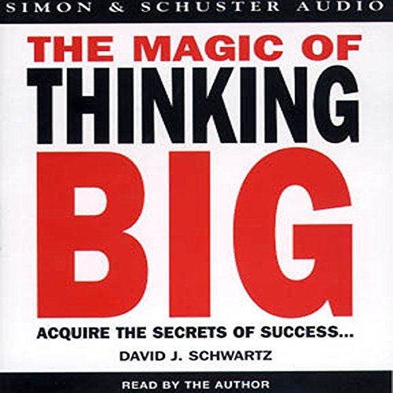
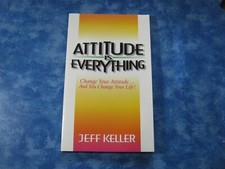
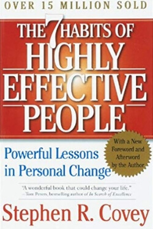

Library › Books like The Power of Your Subconscious Mind
10 Books Like The Power of Your Subconscious Mind That Hit the Same Nerve
You finished The Power of Your Subconscious Mind by Joseph Murphy and want the same energy: Your subconscious is soil: it grows whatever you plant - thoughts of success or seeds of fear. Choose the seed… Here are 10 more that scratch the same itch, each with a free chapter-by-chapter breakdown, key lessons and action steps on this shelf.

The Magic of Thinking Big Believe it can be done. The size of your success is set by the size of your belief - and excusitis is the failure disease. READ THE FREE BREAKDOWN →
Attitude Is Everything Your attitude is your window on the world - and success is a three-step chain: think, speak, act. Keep the window clean. READ THE FREE BREAKDOWN → Autobiography of a Yogi
Yogananda's memoir of his search for a guru, his years with Sri Yukteswar, and the science of Kriya Yoga that he carried from India to the world.
READ THE FREE BREAKDOWN →
Autobiography of a Yogi
Yogananda's memoir of his search for a guru, his years with Sri Yukteswar, and the science of Kriya Yoga that he carried from India to the world.
READ THE FREE BREAKDOWN →
 Do Epic Shit
Success is a lagging indicator of daily habits. Failure is tuition. And the best time to start was yesterday - the second best is now.
READ THE FREE BREAKDOWN →
Do Epic Shit
Success is a lagging indicator of daily habits. Failure is tuition. And the best time to start was yesterday - the second best is now.
READ THE FREE BREAKDOWN →

The 7 Habits of Highly Effective People Effectiveness isn't a technique - it's character. Win the private battle first, then the public one. READ THE FREE BREAKDOWN →Every summary is free: lessons, examples, action steps, audio in your language.